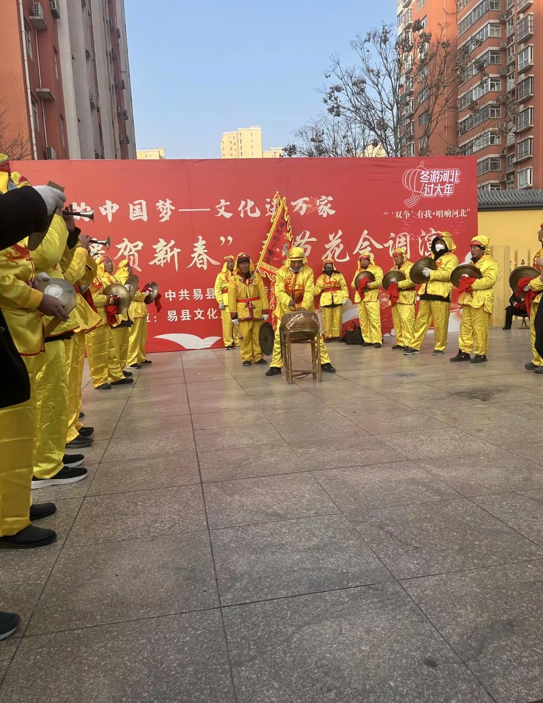
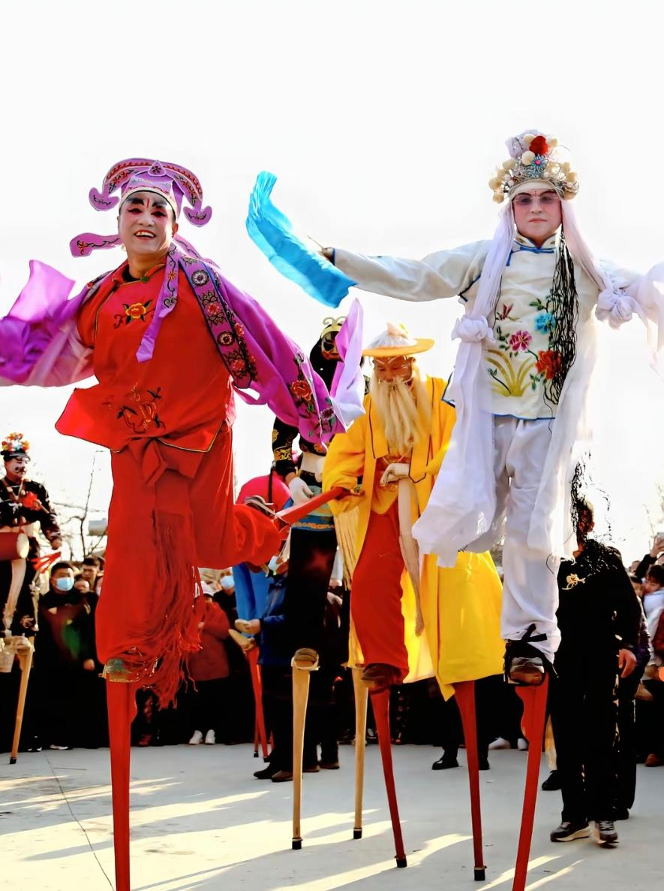
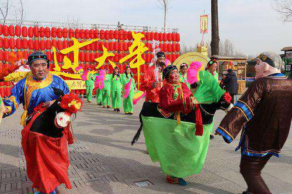
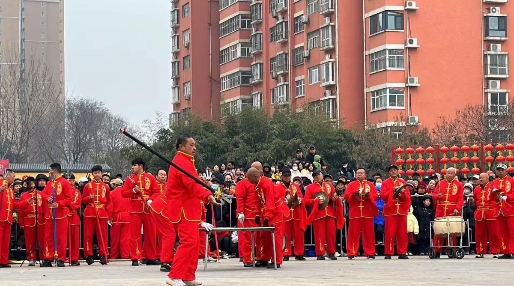

探寻千年文化 · 传承家乡记忆
庙会，是中国传统的民俗文化活动，集宗教信仰、民间艺术、商品贸易于一体。在易县这片古老的土地上，庙会承载着千年的历史记忆，是家乡人民精神文化生活的重要组成部分。
每逢庙会期间，乡亲们从四面八方赶来，祭拜祈福、观看表演、品尝美食、购置百货。庙会不仅是物质的交流会，更是精神的盛宴，承载着我们对美好生活的向往和对传统文化的坚守。
2月21日，农历正月初五，易县2026年"龙狮鼓舞闹易州"春节民俗花会调演拉开帷幕。舞龙、舞狮、秧歌等节目轮番登场，锣鼓喧天闹新春。
后山庙始建于东汉时期，距今已有近两千年的历史，是易县庙会文化的源头。
庙会规模逐渐扩大，从单一的宗教活动发展为集祭拜、贸易、演出于一体的综合性民俗活动。
庙会达到鼎盛时期，会期延长至数天，各地商贾云集，文艺表演丰富多样。
如今，易县庙会被列入非物质文化遗产，传统文化在新时代焕发出新的生机与活力。
国家级非物质文化遗产
威武雄壮

铿锵有力

技艺高超

欢快喜庆

精彩纷呈